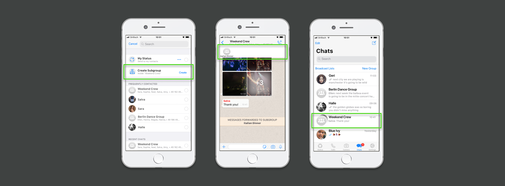

Co-creagency Member Database
Tools: Sketch, Wix CMS, Wix Corvid
Deliverable:
Working Template in Wix
Time Span: 1 month
Team: Amanda Low
Background
GOALGIRLS is a Berlin creative agency,
founded in 2017 by sisters Helena and Kaddie Rothe. Their focus is
female driven and
culturally aware projects with brands such
as Bumble, Netflix, Casper, and ARMEDANGELS in their portfolio.
The Co-creagency community was created in
2019 - a talent pool of over 100 freelance
female creatives, working in an agile
structure to generate innovative ideas for purpose-driven
advertising campaigns.

Problem
Problem: Manual Process
The Co-creagency needed to showcase it's
biggest asset: The
talent pool of female creatives female
creatives. Although the selection process was done with care, there
was not yet a way for outsiders to view who the Co-creagency
members, and what their skillsets, were.
All requests for member information had to be handled by the community manager - a manual process.
All requests for member information had to be handled by the community manager - a manual process.
Task: Online Database
Design and create a working template for a
members database, for up to 150 members.
With a online database, the goal would be:
With a online database, the goal would be:
- Provide visiblity for the individual Co-creagency members
- Showcase the members' skillsets
- Help to recruit new members

Research
Survey
The aim of the survey was to gain information from the Co-creagency
talent pool regarding:
- How the member database could help them
- What information they would be willing to share
- Their involvement with the Co-creagency
- 85% saw seeing other members' skillsets as beneficial to them
- The three features that members' thought were most important to include were: Name, Skills, and Photograph
- Less important features to include were Biography, Social Media, and Website URL
Competitor Analysis
In order to get a better idea of what the Co-creagency would like
for the format, I conducted a competitive analysis. The similar
niche agencies in Berlin I researched did not have a member
database, so I had to look internationally for examples.
Insights
Testing With Non-Users
As an app used by many on a daily basis, many people have strong
likes and dislikes with using WhatsApp, which became apparent during
user testing.
Had there been the timeframe to find people who had not already used WhatsApp, it would have been interesting to compare the different experiences.
Had there been the timeframe to find people who had not already used WhatsApp, it would have been interesting to compare the different experiences.
The Art Of Blending In
The Chats list is already quite full and taking up more space there
would look messy. The
Prototype